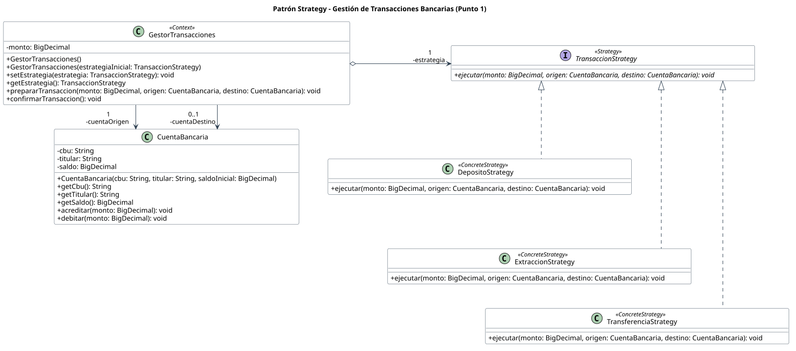
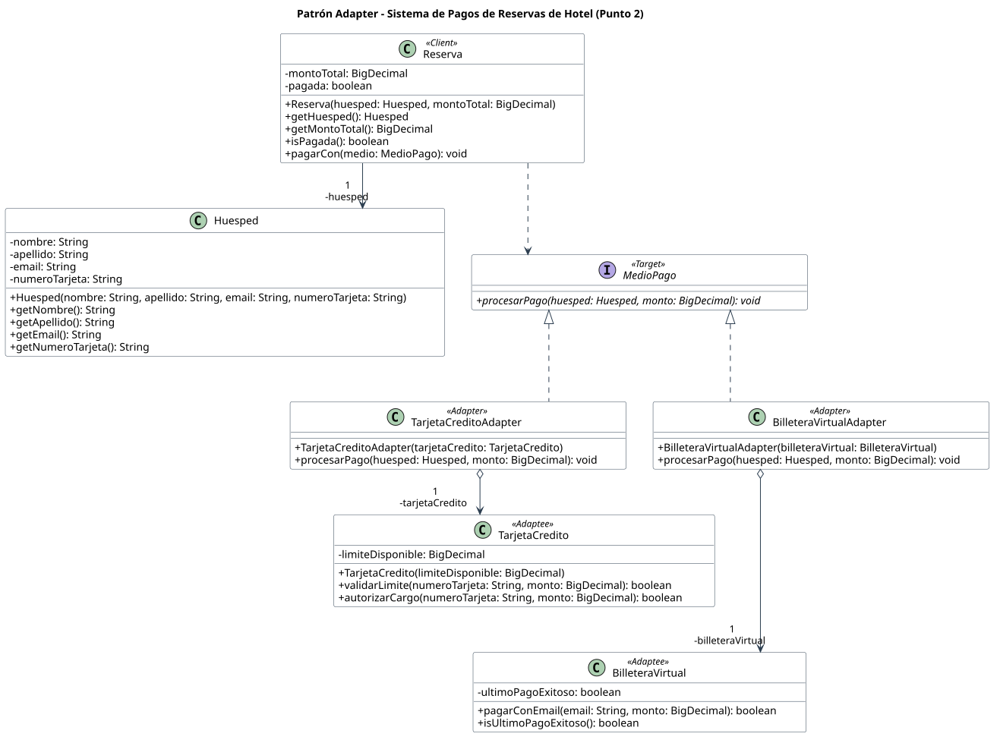
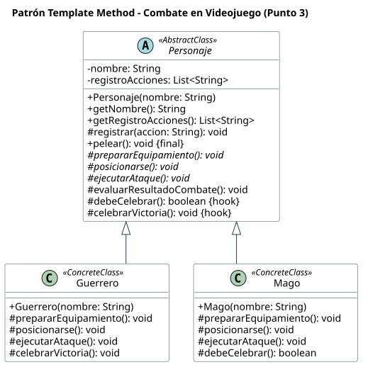
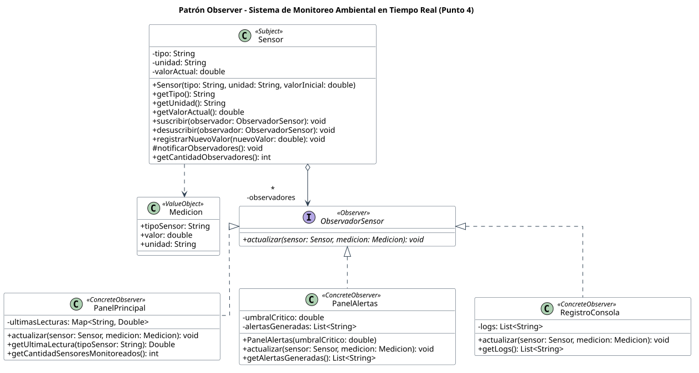
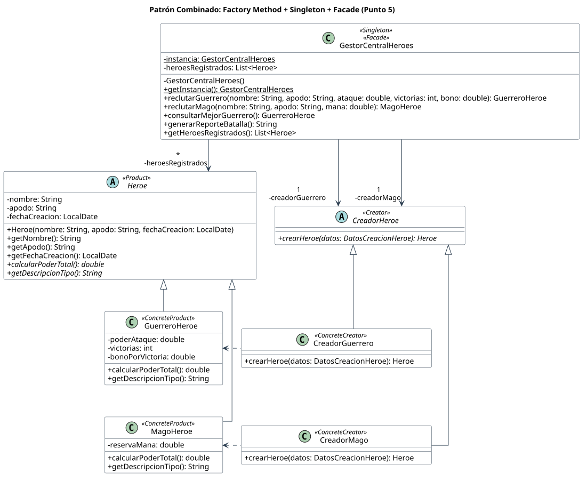
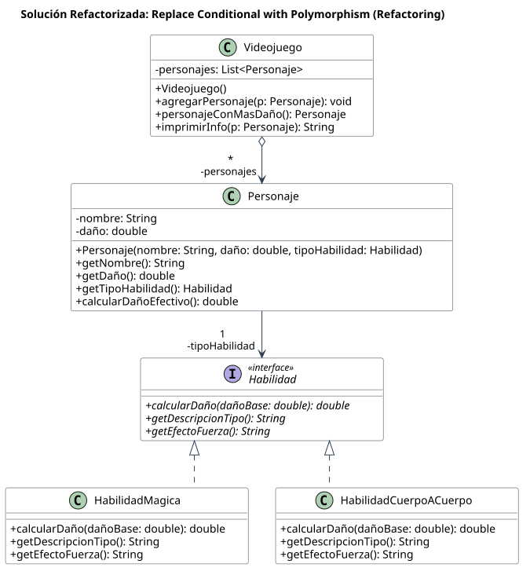

Se seleccionó el patrón de comportamiento Strategy (GoF). El requerimiento exige que el comportamiento transaccional pueda conmutarse dinámicamente en tiempo de ejecución ("cambiar el tipo de operación en cualquier momento antes de confirmar"). Encapsular cada operación (DepositoStrategy, ExtraccionStrategy, TransferenciaStrategy) bajo la interfaz polimórfica TransaccionStrategy desacopla las reglas algorítmicas del contexto GestorTransacciones. Este diseño respeta estrictamente el principio Open/Closed (OCP), permitiendo incorporar futuras transacciones sin alterar la clase de gestión.

patrones/strategy y GestorTransaccionesTest.java
Huesped y Reserva (método pagarCon(medio)). Las clases de los medios de pago ya existen (TarjetaCredito y BilleteraVirtual) y no pueden modificarse. Permitir el pago sin alterar las clases existentes.
Se aplicó el patrón estructural Adapter (específicamente la variante de objetos por composición). Las clases existentes TarjetaCredito y BilleteraVirtual (Adaptees) poseen interfaces incompatibles con el dominio del hotel y están cerradas a modificación. Se introdujo la interfaz objetivo MedioPago (Target) esperada por Reserva (Client). Los adaptadores TarjetaCreditoAdapter y BilleteraVirtualAdapter envuelven por composición cada clase legada y traducen la llamada uniforme procesarPago(huesped, monto) a las firmas nativas de cada proveedor.

patrones/adapter y ReservaPagoAdapterTest.java
Se implementó el patrón de comportamiento Template Method (GoF). La secuencia general del combate es idéntica para todos los personajes (preparar equipamiento, posicionarse, ejecutar ataque, evaluar resultado y celebrar opcionalmente). El método plantilla public final void pelear() en la superclase abstracta Personaje fija invariante este esqueleto, delegando únicamente los pasos específicos (métodos primitivos abstractos) en las subclases Guerrero y Mago.
Personaje, dentro del método plantilla public final void pelear(). La palabra clave final de Java impide que las subclases modifiquen el orden de ejecución.protected boolean debeCelebrar() (por defecto true; el Mago lo sobreescribe retornando false) y el hook de acción protected void celebrarVictoria() (implementado por Guerrero).Guerrero y Mago, y no al revés.
patrones/templatemethod y PersonajeTemplateMethodTest.java
Se aplicó el patrón Observer (GoF Comportamiento). El sujeto observable (Sensor) mantiene una colección desacoplada de observadores suscritos a través de la interfaz ObservadorSensor. Al registrarse una nueva lectura con registrarNuevoValor(...), el sensor notifica automáticamente a todas las vistas mediante notificarObservadores(). El acoplamiento es mínimo: el sensor desconoce las clases concretas de los paneles, y los clientes pueden suscribir o desuscribir paneles dinámicamente con suscribir() y desuscribir() cumpliendo OCP.

patrones/observer y SistemaMonitoreoObserverTest.java
CreadorHeroe (CreadorGuerrero, CreadorMago) delega en subclases la instanciación de Heroe (GuerreroHeroe, MagoHeroe). Los gremios quedan 100% desacoplados de los constructores concretos. Nuevas clases de héroes (ej. Arquero) se añaden simplemente creando sus clases correspondientes sin modificar el gestor existente.GestorCentralHeroes implementa Singleton con constructor privado, atributo estático instancia y método synchronized getInstancia(). Garantiza que todos los gremios operen sobre el mismo registro compartido de héroes reclutados, erradicando estados inconsistentes.GestorCentralHeroes actúa a su vez como Fachada: provee operaciones simples (reclutarGuerrero, reclutarMago, consultarMejorGuerrero, generarReporteBatalla), ocultando al cliente la complejidad interna de las fábricas, las transferencias de datos (DatosCreacionHeroe) y los algoritmos de ordenamiento.
patrones/heroes y GestorHeroesTest.java
public void imprimirInfo(Personaje p) {
if (p.getTipoHabilidad().getClass() == HabilidadMagica.class) {
System.out.println("Tipo: Magica");
System.out.println("Daño: " + (p.getDaño() * 1.5));
System.out.println("Efecto: Quemadura");
} else if (p.getTipoHabilidad().getClass() == HabilidadCuerpoACuerpo.class) {
System.out.println("Tipo: Cuerpo a Cuerpo");
System.out.println("Daño: " + (p.getDaño() * 2.0));
System.out.println("Efecto: Aturdimiento");
}
}
.getClass() == ...) mediante estructuras condicionales (if / else if) para bifurcar la lógica de negocio.Videojuego calcula fórmulas de daño y define efectos que son incumbencia exclusiva de cada habilidad.HabilidadDistancia) exige modificar Videojuego añadiendo otro else if. Además, este patrón condicional tiende a propagarse en múltiples métodos del sistema (Repeated Switches), multiplicando el riesgo de regresiones.Habilidad con los métodos calcularDaño(dañoBase), getDescripcionTipo() y getEfectoFuerza(). Cada clase concreta implementa polimórficamente sus propios valores. Personaje delega en su habilidad mediante calcularDañoEfectivo(). Videojuego queda completamente libre de condicionales.
refactoring/refactored y VideojuegoRefactoredTest.java
Es un vocabulario riguroso, común y sin ambigüedades construido y compartido activamente entre los desarrolladores y los expertos del negocio (Domain Experts). Su propósito es erradicar los errores de traducción mental entre la especificación y la implementación: los mismos términos del negocio se utilizan textualmente en las conversaciones, en los diagramas y en el código fuente (clases, métodos y excepciones). En nuestro TP: si el negocio habla de "acreditar depósito" o "procesar pago", el código expresa exactamente cuenta.acreditar(...) y medio.procesarPago(...).
La diferencia fundamental radica en la identidad:
CuentaBancaria (identificada unívocamente por su CBU; el saldo cambia pero sigue siendo la misma cuenta) y Huesped.Medicion (compuesta por valor, unidad y tipoSensor; si la temperatura varía, se emite una nueva medición) y los importes monetarios (BigDecimal).Es el límite conceptual y formal dentro del cual un modelo de dominio y su Lenguaje Ubicuo son aplicables con significado unívoco y consistente. En sistemas de envergadura, el mismo concepto tiene connotaciones distintas según el área: en Ventas, un "Héroe" o "Personaje" se enfoca en costo de reclutamiento y contrato; en Combate, se define por poder de ataque y maná. Forzar un único modelo global genera clases sobrecargadas y acoplamiento severo. Delimitar Bounded Contexts permite que cada subsistema evolucione con autonomía y alta cohesión comunicándose mediante contratos explícitos.
Los diagramas UML actúan como un puente visual neutral entre técnicos y expertos del negocio:
Favorecen el lenguaje común porque permiten someter a prueba la comprensión del dominio de forma colaborativa en una pizarra antes de codificar.